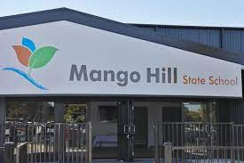
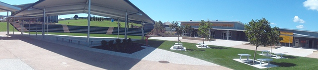

Mango Hill State School opened in January 2012 to service the growing Mango Hill community. Our five core values are: Excellence - celebrating success in academic, sporting and cultural pursuits Respect - treating self and others with kindness, tolerance, care and compassion Innovation - finding clever, creative ways of working Teamwork - developing partnerships, co-operation and collaboration for success Commitment - striving to achieve through persistence and determination. These values are used to guide decision-making for the school and are explicitly taught to children through the code of school behaviour. Our master planned school is an engaging learning community with state of the art technology and facilities, quality staff and outstanding resources. We are focussed on teaching and learning to assist each child to reach their potential. As an Independent Public School, all staff have been selected by the Principal based on their expertise and experience. We are proud of our fantastic teachers and support staff. Mango Hill SS is a great school!
At Mango Hill State School we are implementing the national curriculum in all learning areas including English, Mathematics, Science, HASS, health and physical education, the arts (including visual arts, drama, music, dance and media), LOTE (Italian in Prep-6) and technology. Specialists teachers are employed to deliver lessons in performing arts, physical education, Italian (LOTE) and STEM (integrated science and technology units). A range of excursions and incursions are utilised to provide opportunities to consolidate and extend the learning. Students in Prep to Year 3 participate in weekly swimming lessons. Year 1 students participate in this program during Term1 while our Prep, Year 2 and Year 3 students in Term 4 each year to support the HPE curriculum. Students in Year 4-6 participate in a yearly camp. An outline of the camp structure is in the related links.
Physical Education has a significant role at Mango Hill State School. Physical Education and extra-curricular sporting activities can significantly contribute to the social and mental health of students. Physical Education is an area in which Mango Hill students achieve high results and plays a major role in student engagement and their overall confidence at school. At Mango Hill State School, our aim is for... All students to have an opportunity to regularly participate in quality school physical activities that are well organised, comparable with their ability level, provide them with social interaction opportunities and above all, are FUN. If you would like to know further information about Physical Education or extra-curricular sporting activities, please read through our Manual (PDF 1918KB). We have provided the list of topics included in the manual below. Overview (Prep - Year 6) Why play sport? (Prep - Year 6) Physical Education Delivery (Prep - Year 6) Physical Education Curriculum (Prep - Year 6) Interschool Sport (Years 4-6) Gala Days (Years 5-6) AFL Program (Years 4-6) Netball Program (Years 4-6) Intra-school Sport (Prep - Year 6) Senior Athletics Carnival (Years 3-6) Junior Sports Day (Prep - Year 2) Cross Country (Prep - Year 6) Swimming Carnival (Years 3-6) Representative Sport (Students aged 10-12 yrs) Pine Rivers District Sporting Trials (Students aged 10-12 yrs) Pine Rivers District Sport Trial Process (Students aged 10-12 yrs) Pine Rivers District "Big Three" Carnivals (Students aged 10-12 yrs) Representative Pathway (Students aged 10-12 yrs)
At Mango Hill State School, we are committed to providing children with many different opportunities. Each lunch break, there is a club operating that children are welcome to join. Some of the of the activities include: Choir (pictured) Robotics Photography Craft Soccer Ball games Dance Fitness Claymation Optiminds All students in Year 1-6 are welcome to attend any clubs. Prep students are welcome to join some clubs from Term 3. Students in Year 3-6 will be offered the opportunity of exploring one area in further details through our electives program. Options include robotics, wakkakiri, claymation, environment and sustainability, various sports, flight and creative writing.
ePAL Program Parents of students in Years 1 - 6 will have the opportunity to nominate their child for the ePAL (electronic Portable Anytime Learning) program in which students will have their own privately owned and managed iPad or Microsoft Surface to support their learning. Parents of students in Years 1 - 6 will have the opportunity to nominate their child for the ePAL (electronic Portable Anytime Learning) program in which students will have their own privately owned and managed iPad or Microsoft Surface to support their learning. In Semester Two Prep students will be invited to join the program. Students in Years Prep – 3 are able to use iPads in their classrooms. Students in Years 4 – 6 are able to use an iPad or a Surface Pro. Program Description The aim of the ePAL (electronic Portable Anytime Learning) program is to create and support teaching and learning in a digital learning environment. It strongly encourages the community school value of Innovation. Benefits of the Program Extremely high levels of student engagement and productivity Greater opportunities to individualise learning and cater for learning styles Increased development of problem solving skills and creativity Collaborative approach to learning Enhanced communication skills A connected learning environment providing ‘real-world’ learning through access to a wealth of information and resources
In Mango Hill State School, our library is called the Hub. In the Hub, you can borrow one book at a time and you must return it. The Hub even supports the Accelerated Reader Program or AR for short. If you're in AR, you can borrow 2 books from the Hub.
In Mango Hill State School, our old hall was replaced by a new hall called Gigum Hall. The hall was named Gigum Hall because the word 'gigum' is the gubbi gubbi word for cockatoo.
In Mango Hill State School, we have a piazza where we sit down and talk. You aren't allowed to run in the piazza but you are allowed to play handball in a handball square.